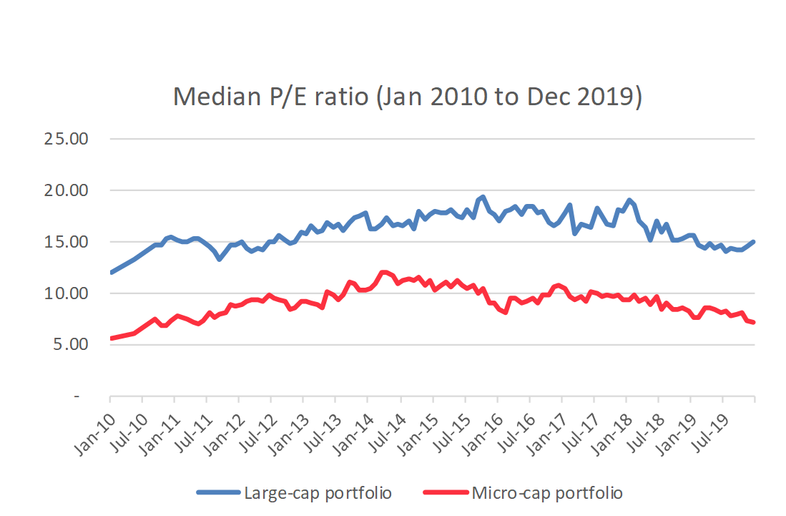
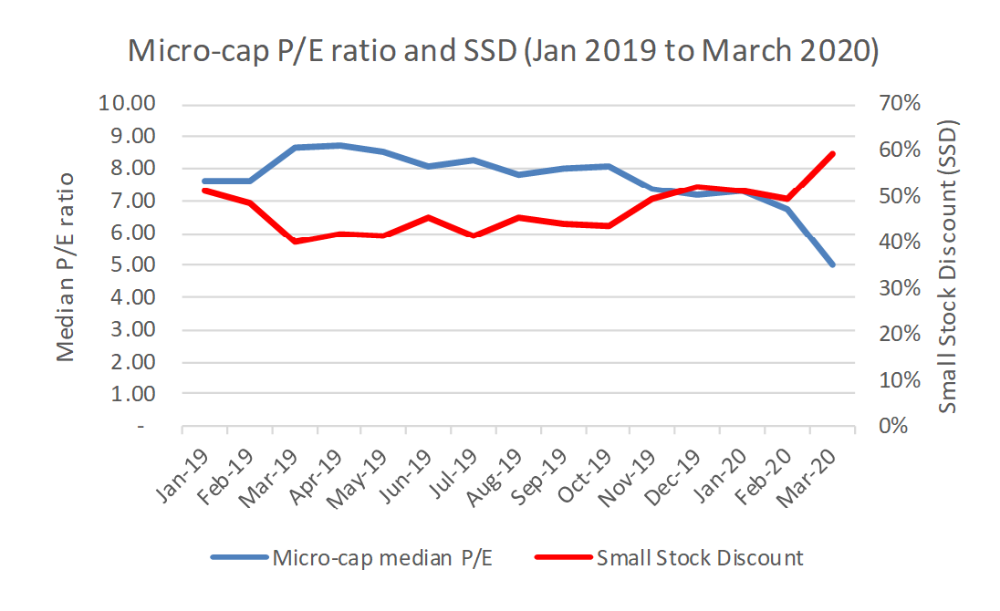

Valuations of South African SME’s hit rock bottom
– Part 2: First quarter 2020
30/04/2020
In Part 1 of our two-part series dealing with the decline of South African SME valuation multiples to fresh lows, we took a look at how small company pricing had recovered strongly after the financial crisis with the median P/E ratio of small-capitalisation JSE companies doubling from 5.7 in January 2010 to 12.1 in March 2014. A multitude of economic challenges in the second half of the decade saw the median P/E ratio of the micro-cap group drop by a massive 41% to 7.2, reversing most of the gains that had been achieved during the recovery from the financial crisis. Unfortunately, worse was still to come…
Enter COVID-19…
At the dawn of the new decade, few could have predicted the carnage that awaited global stock markets in the first quarter of 2020 as a result of the COVID-19 pandemic. The S&P 500 index declined from its all-time high of 3 386 on 19 February to 2 237 on 23 March, a decline of 34% in just over a month. Locally, the JSE’s top-40 share index declined from 52 358 on 17 February to just 34 199 on 18 March, a decline of 35%. So what did this mean for the pricing of the JSE’s smallest constituents?
As a general rule, in times of global economic uncertainty, small-cap shares in emerging market economies take a hiding second to none. Capital is typically diverted away from high-risk investments, such as equities, and into safe-haven assets such as gold and sovereign bonds of developed nations. The JSE’s Small-cap index dutifully followed script by posting a 38% decline between the start of February and 19 March.
SME valuation multiples
We concluded Part 1 of this series with the observation that by December 2019, a significant gap had opened up between the median P/E ratios of the largest and smallest JSE-listed companies. As a result, the pricing discount, or Small Stock Discount, applicable to smaller JSE-listed companies ended the last decade close to a 10 year high, as shown in the chart below. This signified a lack of investor confidence in the South African economy. To recap, in terms of analysis performed by Crest Capital as at 31 December 2019, the median P/E ratio of the largest JSE-listed companies (“the Large-cap portfolio”) equated to 15 times earnings while the median P/E ratio of the smallest companies (“the Micro-cap portfolio”), equated to a paltry 7.2, a discount of 52%.

With the heightened risk-aversion prevalent in a post-COVID-19 world, the Small Stock Discount (“SSD”) increased further to 59% at 31 March 2020, as shown in the chart below. The chart further shows that the median P/E ratio of the Micro-cap group declined from a respectable multiple of 8 times earnings in September 2019, to an embarrassingly low ratio of 5 in March 2020. Micro-cap shares are now trading at considerably lower multiples than at the time of the financial crisis.

Pricing implications for unlisted, South African SME’s
The median market value of the constituents of the Micro-cap portfolio as at 31 March 2020 equated to R292m, so the average company included in the portfolio is still far larger than most South African privately-held businesses (“PHBs”). As the market value of the subject business declines, so too would the P/E ratio generally decline, suggesting that an earnings multiple of less than 5 would be a suitable starting point in establishing a P/E ratio for a PHB in the current market.
The illiquidity of an investment in a PHB is a further consideration when adjusting the observed multiples of listed companies for the purpose of valuing a PHB. While smaller JSE-listed companies are notoriously illiquid, it is still far quicker, not to mention cheaper, to sell shares in a small, listed company than it is to sell shares in a PHB. The illiquid nature of an investment in a PHB typically results in a further reduction of an observed listed company multiple used as a starting point in a PHB valuation.
In light of the above factors, it is clear that current market conditions have had a significant, detrimental impact on the valuations of South African PHB’s and the “4 to 6” range of earnings multiples often advocated by business brokers, appears to now be unrealistic for most businesses.
PHB valuations in a post-COVID-19 world
Company valuations are dynamic and have a limited shelf-life… never more so than in the current turbulent times. One needs look no further than the JSE for evidence of how valuations can fluctuate wildly in a very short space of time. Sasol, which suffered a massive 89% reduction in market value in the space of just three weeks in March, is a prime example of how changes in the markets’ expectations of future earnings will swiftly be factored into a company’s valuation.
Business valuations have many working parts and a detailed discussion of the impact of COVID-19 on the valuation of private companies is beyond the scope of this article, but essentially, the pandemic forces analysts to reconsider three areas of their PHB valuations:
- The valuation approach
- The earnings base
- The earnings multiple or required rate of return in a discounted cash flow valuation
The valuation approach
Mark Twain famously wrote “to a man with a hammer, everything looks like a nail”. This is true of many valuation practitioners who typically have a favoured valuation approach which they will apply regardless of the business being valued, or the economic circumstances at the time of the valuation.
In most cases, a trading company with a history of profitability will be valued using a market multiple (eg. price/earnings) or discounted cash flow (“DCF”) valuation approach, which assume that the value of the business lies in its future earnings stream, rather than its asset base.
While this makes perfect sense in less turbulent times, we believe that given the current state of the global economy and the restrictions placed on operating levels in many sectors of the economy, it would be irresponsible to issue a valuation report without assessing the company’s ability to survive what could be several months of turmoil. Should there be material uncertainty surrounding the survival of the business, it would be appropriate to determine the liquidation value of the business and apply weightings to the results of the going concern valuation established using the P/E or DCF approach, and the liquidation valuation.
The earnings base
Establishing the sustainable earnings base of a business is the starting point for any forward-looking valuation. This is a challenging task even in stable economic conditions as sellers will highlight the profits achieved in their best years while buyers will emphasise the worst years in trying to drive the price down. Furthermore, both parties will typically identify a host of normalisation adjustments to remove non-recurring or abnormal income and expense items to their benefit.
Typically, current earnings are the best proxy for the future earnings potential of the business, however, in today’s environment, current earnings will be significantly distorted by the effects of COVID-19… for better in some cases or, more commonly, for worse.
While manufacturers of hand sanitizer and home-gym equipment would argue vigorously for a valuation to be based on current earnings, most other companies would refer to 2020 as a best-to-be-forgotten outlier which should be disregarded for the purpose of valuing their business.
In either case, the impact of COVID-19 on the company’s earnings base should be isolated and excluded from the sustainable earnings figure used in the valuation. For this reason, a DCF valuation approach is considered optimal as this model allows the valuer to assume suppressed earnings in earlier years of the forecast, followed by a return to normal profit levels in subsequent years.
The multiple or required rate of return
In a market multiples valuation (eg. P/E valuation), the earnings base would be multiplied by a suitable industry pricing factor to estimate the value of the business. In a Discounted Cash Flow valuation, the businesses’ projected cash flows are converted to a present value using a fair rate of return on the investment (eg. a risk-free interest rate adjusted for additional risk factors related to the subject business). All things being equal, a higher required rate of return will result in a lower valuation of the business.
Due to the fear and uncertainty prevalent in the current market, many practitioners will be tempted to apply significant (and unfortunately, arbitrary) discounts to historically-observed multiples to reduce values to account for COVID-19. Practitioners using the DCF approach will be tempted to grossly inflate the required rate of return to account for the heightened risks in the current market.
We consider the most appropriate way to factor the effects of the pandemic into business valuations to be through the preparation of multiple forecast scenarios, which should then be probability-weighted based on the likelihood of each scenario occurring to determine a “risk-adjusted” future earnings base. This approach will also provide users with a useful valuation range in that the value of the company in terms of a “business-as-usual” case can be compared to various downside cases.
Conclusion
Valuing a private company in the current, toxic environment is challenging to say the least. In stable economic times, there will typically be a (sometimes sizable) gap between a buyer and seller’s perspectives of what the fair value of a business is. With major uncertainty surrounding future earnings levels, and indeed, business survival, this pricing gap is likely to grow by a significant margin, potentially to a point where there can be no meeting of minds and hence, no transaction.
Now, more than ever, it is imperative that parties to a transaction and their advisors seek guidance from experienced valuation professionals, who will prepare a thorough and defendable valuation which takes the abnormal economic environment into account and fairly establishes the value of the subject business.
Crest Capital’s directors have collectively performed hundreds of valuations on companies ranging from privately-held micro businesses to top 100 JSE listed companies covering almost every sector of the South African economy and as such, we are ideally placed to offer you the high quality valuation advice you need in these trying times.